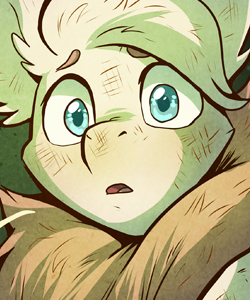
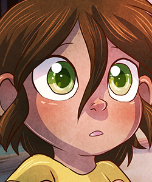

Cast Page
|  |
Belfry Baker
Belfry is a bat, with (she thinks) a bit of squirrel mixed in. She's clumsy, well-meaning, naive, sweet, and tries her hardest to do the very best she can! |
|
"Shhhh. It's okay." It was not okay. Where was Papa? Where was Mum? The batling writhed in discomfort, too hot under the strange covers and too cold to fling them free. "Little Belfry, don't fret so much." A new voice. He knew her name. Whimpering, Belfry opened her eyes, tears leaking from their corners. "Papa," she cried. The two hazy silhouettes hesitated. "Your papa is gone, little one," one said. "You're sick. Please just rest, and we'll figure out what to do after." Gone? What did they mean, gone? If her mum and papa were gone, they'd be back soon. Right? She was enveloped in strange scents and warm fur. They were gone and she was wrung out, too tired and sick and exhausted to think anymore. She slept. |
{kind=link}
|
Claude Oakewood
He's not grumpy, you're just inconsiderate, loud, and far too energetic for an old yote like him. As much as he likes to bark, residents know he's not much for biting. Honestly, he seems to care far more about the residents of Treehollow than he would ever admit. |
|
|
Every day, the same routine. Get up at precisely four-thirty-five in the morning. Use the necessary. Comb fur. Put on clothes. A precisely groomed appearance is the mark of a gentleman. I may not be a gentleman, but at least I can get close. Water the plants. Make tea. Oatmeal is best served with a smidgeon of honey. Extravagant? Maybe. But at my age, you can afford to be a little extravagant. Here, my routine diverges since the little pest came to Treehollow. Before, I would spend my day in my rocking chair in Cutter's Corner, reading books and greeting library patrons. Now, I'm swamped with research. Ever more research. What are you? Where did you come from? Why haven't you any fur except that matted mop on the top of your overlarge cranium? I suppose only time -- and effort -- will tell. |
{kind=link}
|  |
Tamberlane Belfriton
The eponymous Tamberlane is a strange creature that the citizens of Treehollow found in the woods. She's not very good at communicating verbally, but she seems to know a bit of pidgin Trissol (Silver Sage Sign Language). How she wound up in the Rattleglen Forest is anyone's guess. |
|
Cold. Bored. Alone. What's that? In the short trees! Kitty! Deer...? Hi good morning! Hungry, food, feed me! Hi, kitty. Touch kitty. ... Ow! Kitty?? Bad? I did bad? Ow, no push! No push! What is ghost? Kitty ghost? No touching! No touching, bye bye kitty! Bye bye! Ow, scared, scary! No touching, no push, no-- |
{kind=link}